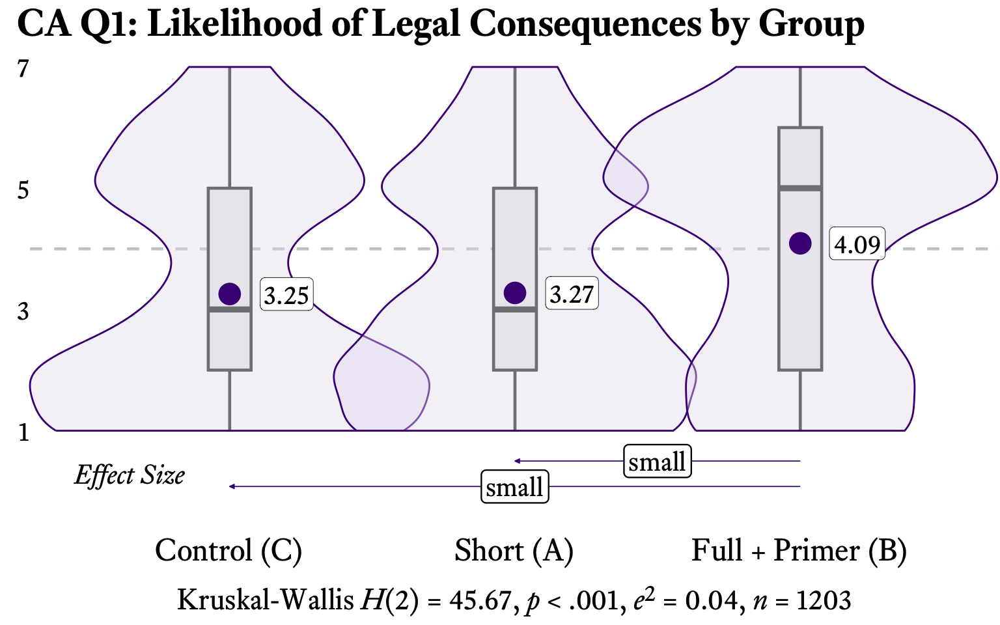
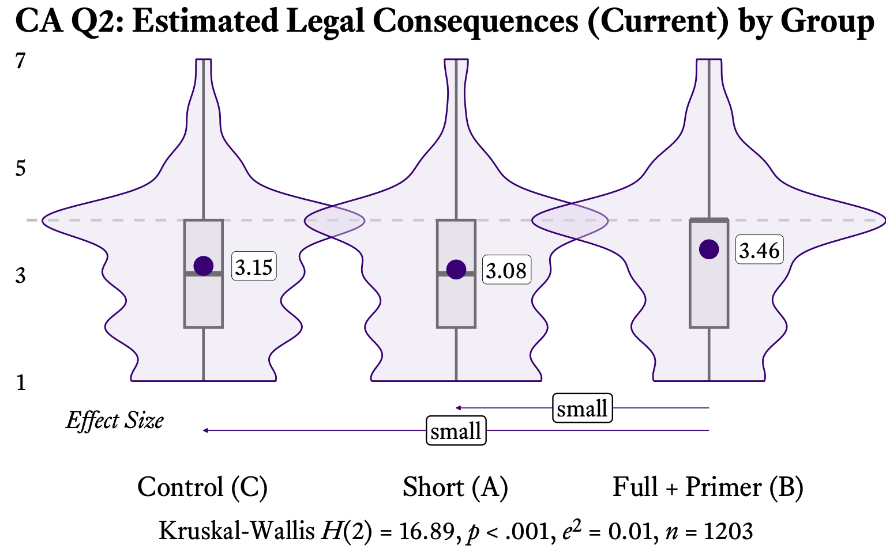
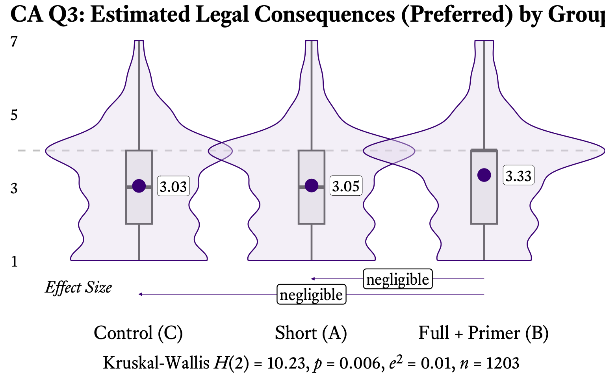
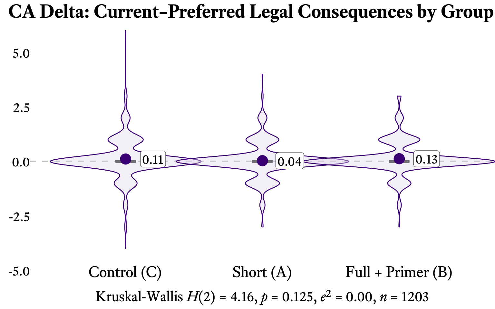
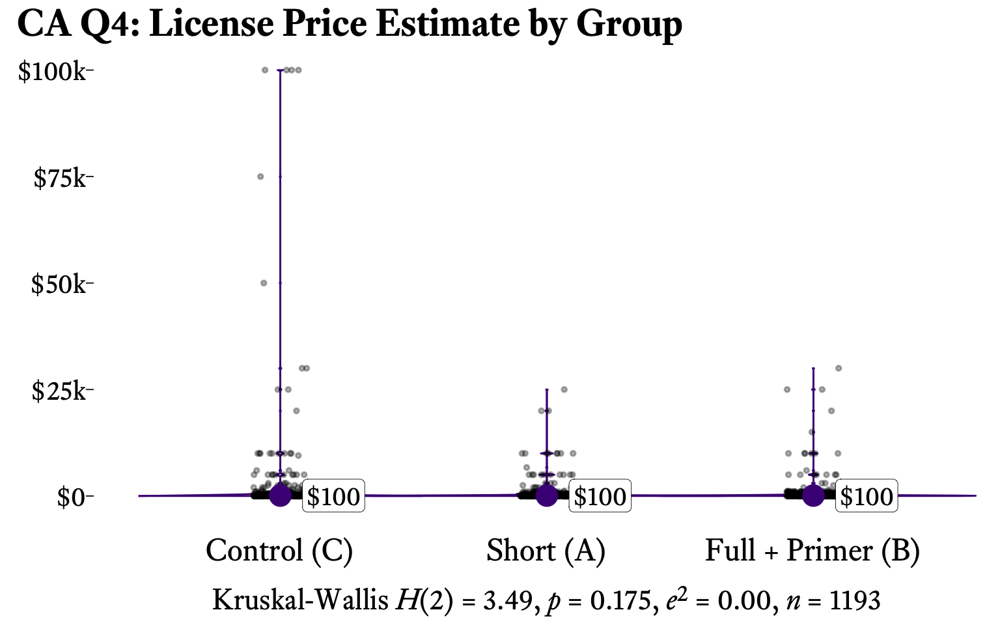

| Group | Mean | Std. Dev. | Median |
|---|---|---|---|
| Control (C) | 3.25 | 1.95 | 3 |
| Short (A) | 3.27 (+0.6%) | 1.87 | 3 |
| Full + Primer (B) | 4.09 (+25.8%) | 1.92 | 5 |
7.4 Commercial Advertising
7.4.0 Scenario Presentation
Respondents saw a two-part scenario. First, a search engine result showing a photograph with a caption that varied by condition. Then, all respondents saw the same Facebook advertisement using that photograph.

© 2018 D. Green. All Rights Reserved.
 © 2018 D. Green is licensed under CC BY-NC 4.0
© 2018 D. Green is licensed under CC BY-NC 4.0
Full + Primer (B) respondents first reviewed a CC Education page explaining all six Creative Commons license types and the CC0 Public Domain Dedication before seeing this scenario.
 © 2018 by D. Green is licensed under Creative Commons Attribution-NonCommercial 4.0 International
© 2018 by D. Green is licensed under Creative Commons Attribution-NonCommercial 4.0 International
The bike shop owner uses the image in the following Facebook ad.

The ad is shown to more than 100,000 people.
In your opinion, how likely is the bike shop owner to face legal consequences for this use?
7-point scale: 1 “Extremely unlikely” to 7 “Extremely likely”
In your opinion, if the bike shop owner were sued for these actions, what legal consequences do you think they would face?
7-point scale: 1 “No consequences” — 4 “Some negative consequences, such as a court order to stop and/or a moderate fine” — 7 “Very negative consequences, such as incarceration and/or a large fine”
In your opinion, what legal consequences should the bike shop owner face for these actions?
7-point scale: 1 “No consequences” — 4 “Some negative consequences, such as a court order to stop and/or a moderate fine” — 7 “Very negative consequences, such as incarceration and/or a large fine”
Now imagine that before the use described above, the bike shop owner and the owner of this work agreed on a price for a non-exclusive license. In your opinion, what do you think would be a reasonable price for that license?
Open response in US dollars
NoteScenario Context
A local bike shop owner uses a copyrighted photograph by D. Green in a Facebook advertisement that receives over 100,000 impressions. The photographer discovers the unauthorized use and considers legal action. The image caption varies by treatment condition:
| Condition | Caption |
|---|---|
| Control (C) | © 2018 D. Green. All Rights Reserved. |
| Short (A) | © 2018 D. Green is licensed under CC BY-NC 4.0 |
| Full + Primer (B) | © 2018 by D. Green is licensed under Creative Commons Attribution-NonCommercial 4.0 International |
Legal Context: This use is infringing across all conditions. Under the Control’s standard copyright notice, any unauthorized commercial reproduction infringes. Under the treatment conditions’ CC BY-NC 4.0 license, commercial advertising plainly violates the NonCommercial clause. Unlike PD or FS, where the treatment changes the infringement analysis, here the CC license does not excuse the commercial use. Any treatment effect reflects how CC licensing information shapes perceptions of an act that remains infringing regardless.
Expected Pattern: High perceived risk across all groups, with treatment effects driven by CC signaling rather than changes in legal status. The full-text license (Full + Primer (B)) may paradoxically increase perceived risk if respondents interpret the explicit NonCommercial restriction as signaling enforcement willingness.
7.4.1 Q1: Commercial Advertising Legal Risk
Do respondents recognize commercial use as high-risk?
* p < .05, ** p < .01, *** p < .001
| Comparison | P(1st > 2nd) | Effect Size | Sig. |
|---|---|---|---|
| C > A | 61.7% | small | *** |
| C > B | 61.9% | small | *** |
| A > B | 49.2% | negligible | n.s. |
* p < .05, ** p < .01, *** p < .001
n.s. = not significant

Q1 asks respondents how likely the bike shop owner is to face legal consequences for using the photograph in a Facebook advertisement without permission. Because the use is commercial — and commercial advertising plainly violates the NonCommercial clause of CC BY-NC — the use is infringing across all conditions. The question, then, is whether respondents perceive commercial use of a photograph as high-risk, and whether exposure to CC licensing information shifts that perception.
The results indicate that respondents across all groups recognize commercial advertising as relatively high-risk. The Control (C) group rated the likelihood of legal consequences at 3.25 (SD = 1.95), Short (A) at 3.27 (SD = 1.87), and Full + Primer (B) at 4.09 (SD = 1.92). The Kruskal-Wallis test was significant (\(\chi^2\)(2) = 45.67, p = < .001). Pairwise VDA effect sizes are reported in Table 2. Unlike the Public Domain and Educational Use scenarios, where CC licensing information reduced perceived risk, the Commercial Advertising scenario presents a case where CC information may have an ambiguous or even paradoxical effect: the NonCommercial restriction could signal that the licensor cares about commercial misuse, potentially increasing perceived risk among respondents who read the full license text.
7.4.2 Q2: Perceived Consequences for Commercial Infringement
What penalties do respondents expect for commercial use of copyrighted material?
| Group | Mean | Std. Dev. | Median |
|---|---|---|---|
| Control (C) | 3.15 | 1.39 | 3 |
| Short (A) | 3.08 (−2.2%) | 1.45 | 3 |
| Full + Primer (B) | 3.46 (+9.8%) | 1.44 | 4 |
* p < .05, ** p < .01, *** p < .001
| Comparison | P(1st > 2nd) | Effect Size | Sig. |
|---|---|---|---|
| C > A | 56.3% | small | ** |
| C > B | 57.6% | small | *** |
| A > B | 51.5% | negligible | n.s. |
* p < .05, ** p < .01, *** p < .001
n.s. = not significant

Q2 shifts from likelihood to severity: given that the bike shop used the photograph without permission, what legal consequences do respondents believe would result under the current law? The response scale runs from 1 (“No consequences”) to 7 (“Very negative consequences, such as incarceration and/or a large fine”), with 4 anchored at “Some negative consequences, such as a court order to stop and/or a moderate fine.”
The Control (C) group estimated consequences at 3.15 (SD = 1.39), Short (A) at 3.08 (SD = 1.45), and Full + Primer (B) at 3.46 (SD = 1.44). The Kruskal-Wallis test was significant (\(\chi^2\)(2) = 16.89, p = < .001). The means across all groups sit in the moderate-to-high range of the 7-point scale, reflecting a shared intuition that unauthorized commercial use of a photograph carries meaningful consequences. Pairwise VDA effect sizes are reported in Table 4. The Commercial Advertising scenario’s high baseline severity — even in the Control — is consistent with the scenario’s design: a high-visibility advertisement with over 100,000 impressions is the kind of use that respondents intuitively associate with legal exposure, regardless of whether a CC license is present.
7.4.3 Q3: Normative Preferences
What consequences do respondents believe should apply to commercial infringement?
| Group | Mean | Std. Dev. | Median |
|---|---|---|---|
| Control (C) | 3.03 | 1.49 | 3 |
| Short (A) | 3.05 (+0.7%) | 1.46 | 3 |
| Full + Primer (B) | 3.33 (+9.9%) | 1.47 | 4 |
* p < .05, ** p < .01, *** p < .001
| Comparison | P(1st > 2nd) | Effect Size | Sig. |
|---|---|---|---|
| C > A | 55.5% | negligible | * |
| C > B | 55.6% | negligible | * |
| A > B | 49.9% | negligible | n.s. |
* p < .05, ** p < .01, *** p < .001
n.s. = not significant

Q3 uses the same severity scale as Q2 but asks what consequences respondents think should follow from the bike shop’s unauthorized use of the photograph. This measures normative preferences rather than perceptions of current law. For the Commercial Advertising scenario — where the use is clearly commercial and therefore infringing under all conditions — Q3 captures whether respondents believe commercial infringement warrants the consequences the law currently provides.
The Control (C) group’s preferred consequence level was 3.03 (SD = 1.49), Short (A) was 3.05 (SD = 1.46), and Full + Primer (B) was 3.33 (SD = 1.47). The Kruskal-Wallis test was significant (\(\chi^2\)(2) = 10.23, p = 0.006). The relatively tight grouping of Q3 means across conditions suggests that respondents’ normative judgments about commercial infringement are more stable than their perceptions of what the law currently does. This pattern — Q3 less variable than Q2 across treatments — is consistent with the idea that CC licensing information primarily shapes perceptions of the legal status quo rather than underlying moral intuitions about the appropriate severity of consequences. Pairwise VDA effect sizes are reported in Table 6.
7.4.4 Delta (Q2 - Q3): Commercial Regulation Attitudes
Do respondents want stricter or more lenient commercial use rules?
Delta = Q2 − Q3. Positive values indicate the law is perceived as stricter than preferred; negative values indicate the law is perceived as more lenient than preferred; zero indicates alignment.
| Group | Mean | Std. Dev. | Median |
|---|---|---|---|
| Control (C) | 0.11 | 0.89 | 0 |
| Short (A) | 0.04 (−63.6%) | 0.78 | 0 |
| Full + Primer (B) | 0.13 (+18.2%) | 0.74 | 0 |
* p < .05, ** p < .01, *** p < .001
| Comparison | P(1st > 2nd) | Effect Size | Sig. |
|---|---|---|---|
| C > A | 50.4% | negligible | n.s. |
| C > B | 53.2% | negligible | n.s. |
| A > B | 52.7% | negligible | n.s. |
* p < .05, ** p < .01, *** p < .001
n.s. = not significant

| Group | V | Non-Zero | Dir. | Sig. |
|---|---|---|---|---|
| Control (C) | 5972.0 | Yes | + | ** |
| Short (A) | 4682.5 | No | + | n.s. |
| Full + Primer (B) | 4669.5 | Yes | + | *** |
* p < .05, ** p < .01, *** p < .001
n.s. = not significant
The Delta analysis for Commercial Advertising addresses two distinct questions. First, the between-group Kruskal-Wallis test asks whether CC licensing information shifts the law–preference gap: Control Delta = 0.11 (SD = 0.89), Short (A) = 0.04 (SD = 0.78), Full + Primer (B) = 0.13 (SD = 0.74). The omnibus test was not significant (\(\chi^2\)(2) = 4.16, p = 0.125). All three deltas were positive, indicating that respondents across all conditions perceived current law as imposing stricter consequences for commercial advertising infringement than they personally preferred. Pairwise VDA effect sizes are reported in Table 8.
Second, the within-group Wilcoxon signed-rank tests ask whether each group’s Delta differs significantly from zero — that is, whether there is a genuine gap between perceived law and preferences within each condition. As reported in the Wilcoxon table above, at least one group showed a significant departure from zero.
7.4.5 Q4: Commercial License Value
Commercial licenses are typically expensive. Do respondents’ estimates reflect this?
| Group | Mean | Std. Dev. | Median |
|---|---|---|---|
| Control (C) | 2263.39 | 11214.42 | 100 |
| Short (A) | 746.89 (−67.0%) | 2469.81 | 100 |
| Full + Primer (B) | 791.10 (−65.0%) | 2960.75 | 100 |
* p < .05, ** p < .01, *** p < .001
| Comparison | P(1st > 2nd) | Effect Size | Sig. |
|---|---|---|---|
| C > A | 47.8% | negligible | n.s. |
| C > B | 51.6% | negligible | n.s. |
| A > B | 53.8% | negligible | n.s. |
* p < .05, ** p < .01, *** p < .001
n.s. = not significant

Q4 asks respondents to estimate the price of a non-exclusive license for the photograph used in the Facebook advertisement. After trimming the top 1% of responses to remove outlier estimates, median license price estimates were $100 for the Control, $100 for Short (A), and $100 for Full + Primer (B). Mean estimates — which are pulled upward by the right-skewed distribution typical of open-ended price questions — were $2,263, $747, and \(791, respectively. The Kruskal-Wallis test was not significant (\)^2$(2) = 3.49, p = 0.175). Pairwise VDA effect sizes are reported in Table 11.
The divergence between means and medians is informative: it reflects a long right tail of respondents who estimated very high commercial licensing fees, consistent with the scenario’s high-visibility, high-impression advertising context. Commercial stock photography licenses for advertisements with national reach can range from hundreds to thousands of dollars, and the median estimates suggest that respondents’ intuitions about commercial licensing value are broadly calibrated to market reality.
7.4.6 Summary
TipKey Findings — Commercial Advertising
The Commercial Advertising scenario is the study’s clearest case of uniform infringement: the CC BY-NC 4.0 license explicitly prohibits commercial use, so the bike shop’s Facebook advertisement infringes under all three conditions. Any between-group differences reflect how CC licensing information shapes perceptions of an act whose legal status does not change. The key findings are:
Uniformly infringing scenario confirmed. All group means for Q1–Q3 sit in the moderate-to-high range of the 7-point scale, confirming that respondents across all conditions recognize commercial advertising use of a copyrighted photograph as carrying meaningful legal risk. The high baseline in the Control (C) group (Q1 M = 3.25, Q2 M = 3.15) indicates that respondents associate high-visibility commercial use with legal exposure regardless of licensing information.
CC signaling, not legal change. Unlike the Public Domain scenario (where treatment information clarifies the absence of copyright) or Filesharing (where the license may alter the infringement analysis), the Commercial Advertising scenario isolates the signaling function of CC licensing. Treatment effects here cannot be attributed to changes in legal status — the NonCommercial clause does not excuse commercial use. Any observed differences reflect how the presence and detail of licensing information shapes respondent perceptions.
NonCommercial clause paradox. The CC BY-NC license’s explicit NonCommercial restriction creates a potential paradox: rather than reducing perceived risk (as CC information does in non-infringing scenarios), the restriction may increase perceived risk by signaling that the licensor specifically anticipated and prohibited commercial use. The significant between-group difference on Q1 (Kruskal-Wallis p = < .001) is consistent with this signaling mechanism.
Pricing patterns reflect commercial context. License price estimates (median: Control = $100, Short (A) = $100, Full + Primer (B) = $100) are calibrated to the commercial advertising context, with the right-skewed distribution reflecting respondents who anchored on the high-visibility, high-impression nature of the use.
Law–preference gap direction. All three groups’ Delta values were positive, indicating that respondents across all conditions perceived current law as imposing stricter consequences for commercial advertising infringement than they personally preferred. This suggests that even for a clearly infringing commercial use, respondents’ normative preferences are somewhat more lenient than their perceptions of what the law currently requires. Within-group Wilcoxon tests confirm this gap is significant for at least one treatment condition.
Normative stability. Q3 means were relatively stable across conditions compared to Q2, suggesting that CC licensing information primarily shapes perceptions of the legal status quo rather than underlying moral intuitions about the appropriate severity of consequences for commercial infringement.